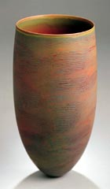
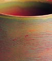

| Sandkörner in der Sonne
Die Keramik der Australierin Pippin Drysdale im Museum für
Angewandte Kunst. Artikel von Pamela Dörhöfer
Ihre
Arbeiten seien so "sophisticated" wie sie es selbst gerne
wäre, sagt die australische Keramikkünstlerin Pippin
Drysdale. Ruhe und Erhabenheit strahlen ihre Keramiken aus
- und bergen doch Überraschungen, denn ihre Oberfläche
verändert sich mit der Perspektive, aus der sie betrachtet
werden: Was von weitem oft monochrom wirkt, offenbart in der Nähe
feine Nuancen, ein Spiel subtiler Licht- und Farbeffekte - Attribute,
mit denen sich auch die Wüste beschreiben ließe. Und
es gibt weitere Parallelen zwischen Kunstwerk und scheinbar karger
Natur: So erinnern die Linien, die sich mal gleichmäßig,
mal gebrochen, meist fein, an manchen Stellen aber auch grob um
die Form dieser hoher Gefäße winden, an Spuren im Sand,
den der Wind verweht hat. Die Objekte sind als Nachhall einer Exkursion
mit dem Flugzeug über die Tanami-Wüste entstanden. Die
Eindrücke aus der Vogelperspektive von der abgeschiedenen Landschaft
im Nordwesten des Kontinents hat Drysdale in ihren jüngsten
Werken verarbeitet. 26 Exponate dieser Serie sind derzeit unter
dem Titel Red Earth als Ausstellung der Heidelberger Galerie Marianne
Heller im Museum für Angewandte Kunst in Frankfurt zu sehen.
Die etwa 50 Zentimeter hohen Gefäße sind Konzentrat
emotionalen Erlebens und ästhetischer Reflexion und das Ergebnis
monatelangen Experimentierens, an dessen Ende Pippin Drysdale zur
aufwendigen Technik fand, die ihren inneren Bildern Ausdruck verleiht;
wobei das Verfahren wenig Sicherheit bietet: Etwa 40 Prozent Verlust
beim Brennen ist einzukalkulieren. Wenn alles gut geht, fließen
Form und Dekor freilich zu einer Einheit von höchster Harmonie
zusammen.
Besticht die Form in raffinierter Schlichtheit (und dadurch, überhaupt
Stand zu haben), so fasziniert die Gestaltung der Oberfläche
durch ihre außergewöhnliche Struktur, irisierend und
vielschichtig wie grob gewebte Naturseide. Drysdale erreicht diesen
Effekt durch mehrere Lagen Farbglasur, in die sie anschließend
horizontale Rillen schneidet, die ausgebürstet und ihrerseits
mit pastos aufgetragener Farbe gefüllt werden. Weil diese schnell
trocknet, kann sich die Künstlerin immer nur kleine Ausschnitte
vornehmen.
Am
Ende jedoch schillert die Oberfläche in unendlichen vielen
Facetten - so wie ein Sandkorn in der Sonne. Flimmert sie beim einen
Objekt irritierend in den Farben des Regenbogens, kontrastieren
bei einem anderen warme Naturtöne mit kühlem Türkis
(für Drysdale eine Erinnerung an das Wasser in der Wüste).
Dann wieder glühen die Lippen einiger Gefäße in
gleißendem Orange, als wären sie der Horizont, hinter
dem die Sonne untergeht.
Die Aborigines hat die Landschaft ihrer Heimat zu Ähnlichem
inspiriert. Auch bei ihnen findet sich das für Drysdale typische
Liniendekor: als Bemalung auf den Körpern und als Muster der
Sammelkörbe - die zudem in ihrer kokonartigen Form mit den
Exponaten hier korrespondieren.
Pippin Drysdale ist wie viele zeitgenössische Künstler
Australiens von der Kultur der Ureinwohner geprägt. Mit ihren
aktuellen Werken hat sie indes zu einer unverkennbaren künstlerischen
Sprache gefunden, die Tradition einbindet und dabei etwas faszinierendes
Neues gebiert.
Mit freundlicher Genehmigung der Frankfurter
Rundschau: Titel: Sandkörner in der Sonne; Autor: Pamela
Dörhöfer; FR vom: 11. Februar 2003.
Presse Bericht (English)
Mehr Artikel
|